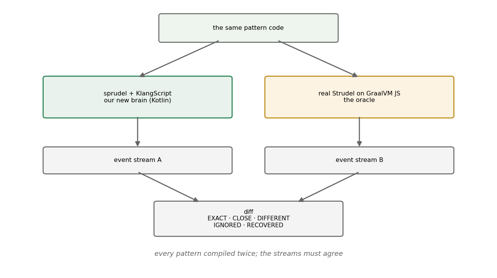

Growing Our Own Brain
Replacing a language runtime while every song depends on its exact behavior.
1. The problem
By January 2026 klang made real music, but its brain was rented. Pattern evaluation ran on @strudel/core, real
Strudel, through a GraalVM polyglot bridge on the JVM. The browser never ran it: until the first Kotlin patterns played
there on 2026-01-04, it could only replay events the JVM had recorded as JSON. Three pressures made that untenable:
- Two worlds, one brain missing. The GraalVM bridge was JVM-only. A Kotlin-native pattern engine could run in
commonMain: one implementation, both platforms, like the audio engine already did. - The bridge taxed every note. Every pattern query crossed a polyglot boundary on its way to the audio engine.
- We wanted our own direction. Extending a language through a bridge means extending someone else's language. New pattern functions, our own DSL conventions, an interpreter we could put an IDE on: all of it wanted ownership.
But the risk was real and specific: a pattern language's value is its exact semantics. "bd [sd sd] <hh oh>" means
one precise arrangement of events in time, including every edge case of cycle boundaries, alternation, and fractional
timing. Reimplement it 99% right and every existing song plays 1% wrong, and nobody can say where.
2. Prior approaches, and why they weren't enough
Clean-room reimplementation from the docs fails silently: documentation describes intent; songs depend on behavior. The gap between the two is exactly where the bugs live.
Porting the original's test suite covers what the tests cover. Strudel's suite is good, but no suite written for an implementation exercises the edges a re-implementation gets wrong; the two codebases disagree in places neither author thought to test.
The classic answer is differential testing, McKeeman's technique of running the same input through two implementations and comparing outputs [1], best known from compiler fuzzing. Our situation was the textbook setup wearing headphones: a reference implementation exists, it is executable, and its output (a stream of timed events) is exactly comparable.
3. The method: keep the old brain as an oracle
So the old brain wasn't removed; it was demoted to an oracle. The verification harness compiles every pattern twice, once with the new Kotlin engine and once with real Strudel running in GraalVM's JS engine, and diffs the resulting event streams.

Fig. 1: every pattern runs through both brains; the streams must agree.
The diff is graded, not binary (the comparison verdicts in the harness are
EXACT, CLOSE, DIFFERENT, IGNORED, and RECOVERED), because two correct implementations still differ in float
dust, and a naive equality check would drown real divergences in noise. Two rules cover every case, an ignored pattern
id and a recovered default gain (Strudel writes 1.0 where we leave it unset), and a few cases add their own. The
grading surfaced the deeper problem almost immediately:
Floating-point time drifts. Cycle arithmetic (thirds of a cycle, sevenths, nested alternations) accumulates error
differently in every implementation. Two mathematically identical patterns diverge in the 15th decimal, then a boundary
comparison flips, and an event lands in the wrong cycle. The fix was to make time exact: first a Rational type,
later hardened into a fixed-point CycleTime value class (the JS BigInt hot path made pure rationals too slow). Time in
sprudel is not a Double, and that single decision closed a whole family of oracle disagreements. The full story of
that type, five representations in five months, has its own post.
The hardest campaign the oracle forced was the part/whole refactor. Strudel events carry both the part (the
fragment active in the queried span) and the whole (the full event it belongs to), and getting their interaction right
across struct, masks, and cycle boundaries is where a reimplementation quietly rots. The oracle turned "quietly" into
a red diff, case by case, until the semantics matched.
Meanwhile the language itself grew underneath: KlangScript, a JavaScript-ish interpreter written in Kotlin (parser
then on better-parse; since replaced by a hand-rolled recursive-descent one for Kotlin/JS production builds), with a
Kotlin-interop registration layer that a KSP processor eventually made nearly
boilerplate-free. The pattern engine became a library inside
that language rather than a runtime beside it.
4. The declaration
On 2026-03-21 the fork got its own name: strudel → sprudel. Partly housekeeping (the implementations had genuinely diverged; new functions existed that upstream didn't have) and partly a statement of direction: compatible in spirit and largely in syntax, but its own language from here.
The oracle outlived the independence it certified. JsCompatTests is still in the tree today, lazily constructing its
GraalVM context, politely skipping itself on non-GraalVM runtimes: a safety line back to the original, run whenever
pattern semantics change. Independence didn't mean burning the bridge; it meant not needing it.
5. What it bought, in hindsight
Every quarter since has cashed checks this one wrote. The IDE features, intellisense, and named parameters of Q2 exist
because the interpreter is ours. Sound definitions, oscillators, and eventually whole instruments became language
objects because the language could be extended freely. The browser runs the same pattern engine as the JVM, one
implementation in commonMain. And the verification habit (do not trust a reimplementation without an executable
oracle, grade the diff, make time exact) became the house style for every risky migration after.
The borrowed brain served for one quarter. The oracle it left behind still serves today.
References
- McKeeman, W. M. (1998). Differential Testing for Software. Digital Technical Journal, 10 (1), 100-107. semanticscholar.org